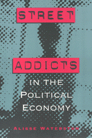

<body bgcolor="#FFFFFF" text="#000000" link="#0000FF" vlink="#CC0000" alink="#CC0000"><center><hr width="350" size="1" align="center" noshade>The moving first-person accounts of drug addicts on the streets of New York<hr width="350" size="1" align="center" noshade><p><a href="https://cdcshoppingcart.uchicago.edu/Cart/ChicagoBook.aspx?ISBN=9780877229926&&PRESS=temple" target="_top">Buy this book!</a> | <a href="https://cdcshoppingcart.uchicago.edu/Cart/Cart.aspx?PRESS=temple" target="_top">View Cart</a> | <a href="https://cdcshoppingcart.uchicago.edu/Cart/Cart.aspx?PRESS=temple" target="_top">Check Out</a></p><p></p></center><!--none//--><h1>Street Addicts in the Political Economy</h1>
<h3>Alisse Waterston</h3>
<P>cloth 0-87722-992-9 $69.50, <FONT COLOR=#990033>Out of Stock Unavailable</FONT>
<br>paper 1-56639-574-7 $29.95, Aug 97, <FONT COLOR=#990033>Available</FONT>
<br>Electronic Book 1-43990-416-2 $29.95 <FONT COLOR=#990033>Out of Stock Unavailable</FONT>
<BR> 304 pp
5.5x8.25
</P><BLOCKQUOTE><I>"This sorely needed viewpoint in the social study of addiction has never been tackled with the comprehensiveness and theoretical sophistication that Waterston brings. Nor has there ever been a greater need to have these viewpoints of research examined."</I>
<BR>&#151<b><i>Anthropological Quarterly</i></b><I></I></BLOCKQUOTE>
<p>In this book Alisse Waterston reveals the economic, political, and ideological forces that shape the nature of street-addict life. Disputing the view that hard-core, low-income drug users are social margins situated in deviant subcultures, the author dispels popular images of the mythic, dark dope fiend haunting our city streets. Using dramatic, first-person accounts from New York City addicts, Waterston analyzes their position in the social structure, the kind of work&#151both legal and illegal&#151they perform, and their relations with family, friends, and lovers. She presents a moving account of daily life from the addict's point of view and demonstrates how addicts are structurally vulnerable to the larger sociocultural system within which they live.
<p>Waterston seeks to connect micro-, or street-level, ethnographic data with macro-level understanding of the political economy. In addition she attempts to extend social reproduction theory to redefine the social organization and social processes that characterize racial and ethnic relations, gender relations, relations centering on sexuality, and the social conception of drug use and users. Using ethnographic data, Waterston portrays addicts as members of the class of working poor that has emerged in New York City, especially in the past fifteen years. She describes how these people have been displaced by gentrification and the diversity within the group: men, women, black, white, Latino, homosexual, heterosexual, homeless, and housed.
<BR>&nbsp;<h2>Reviews</h2>
<p><I>"Alisse Waterston has written a timely, sensitive, and compelling book about a people whose lives are all too easily dismissed by conservatives and liberals alike."</I>
<br>&#151<b><i>Medical Anthropological Quarterly</i></b>
<p><I>"Alisse Waterston's study.breaks new ground in drug studies."</I>
<br>&#151<b><i>Contemporary Drug Studies</i></b>
<p><I>"(A) landmark book...the texture and topography of the addicts' daily existence have never been presented in such detail and vividness..."</I>
<br>&#151<b><i>Journal of Social Distress and the Homeless</i></b>
<p><I>"Alisse Waterston's book is an important work in the area of neo-Marxist theory, particularly that brand of theory that has been so provocatively developed in Europe. Her work is innovative because it breaks new ground in the substantive area chosen for analysis. Waterston is the first to try to fit all the socio-economic pieces together. Given her task and the fact that she is at the frontier, I think she's done a very impressive job."</I>
<br>&#151<b>Eleanor Miller</b>, Professor of Sociology, University of Wisconsin, Milwaukee
<BR>&nbsp;<h2>Contents</h2><P>
<p>Preface
<br>Acknowledgments
<br>1. Toward a Political Economy of Drugs
<br>2. Homelessness and City Shelters
<br>3. Making a living
<br>4. Crime and Punishment
<br>5. Medical Solutions
<br>6. Lovers and Other Strangers
<br>7. Drugs Culture and Society
<br>Appendix
<br>Notes
<br>References
<br>Index
</P><BR>&nbsp;<H2>About the Author(s)</H2>
<P><B>Alisse Waterston</B> is Professor of Anthropology at John Jay College of Criminal Justice, City University of New York. She is editor of <i>An Anthropology of War: Views from the Frontline</i> (Berghahn Books), co-editor of <i>Anthropology off the Shelf: Anthropologists on Writing</i> (Wiley-Blackwell) and author of<i><a href="1462_reg.html" target="_top"> Love, Sorrow, and Rage</a></i> (Temple).</P>
<BR><H2>Subject Categories</H2>
<p><A HREF="/tempress/anthropology.html" TARGET="_top">Anthropology</a>
<BR><A HREF="/tempress/law.html" TARGET="_top">Law and Criminology</a>
</p>
<p align="center"><a href="https://cdcshoppingcart.uchicago.edu/Cart/ChicagoBook.aspx?ISBN=9780877229926&&PRESS=temple" target="_top">Buy this book!</a> | <a href="https://cdcshoppingcart.uchicago.edu/Cart/Cart.aspx?PRESS=temple" target="_top">View Cart</a> | <a href="https://cdcshoppingcart.uchicago.edu/Cart/Cart.aspx?PRESS=temple" target="_top">Check Out</a></p><p><font face="Arial" size="1"><a href="copyright.html" onMouseOver="window.status='Web Copyright Policy';return true;" onMouseOut="window.status=''" title="Web Copyright Policy">&copy;</a> 2015 <a href="http://www.temple.edu" target="new" onMouseOver="window.status='Link to Temple University home page';return true;" onMouseOut="window.status=''" title="Link to Temple University home page">Temple University</a>. All Rights Reserved. http://www.temple.edu/tempress/titles/885_reg.html</font></p>